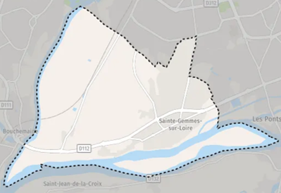

Polluants atmosphériques instantanés
Taux de polluants instantanés :
- Particules Fines (PM2,5) = µg/m3
- Micros-Particules (PM10) = µg/m3
- Dioxyde d'azote (NO2) = µg/m3
- Ozone (O3) = µg/m3
- Dioxyde de soufre (SO2) = µg/m3
- Dioxyde de carbone (CO2) = mg/m3
